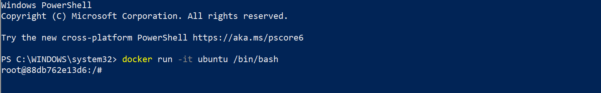
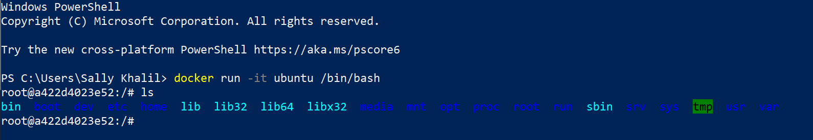
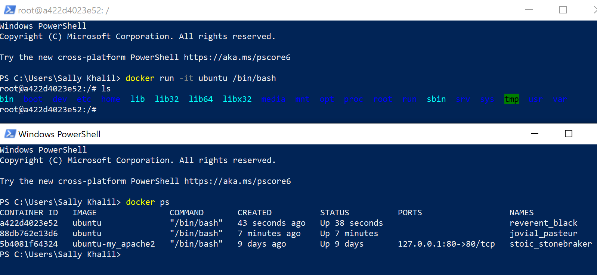
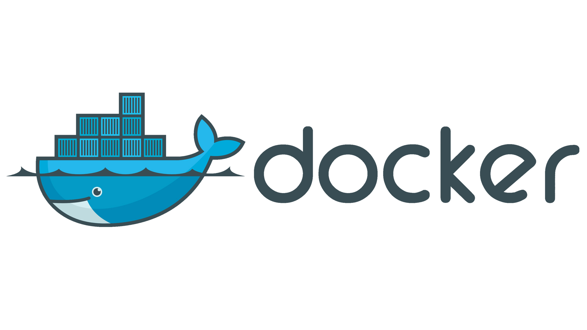
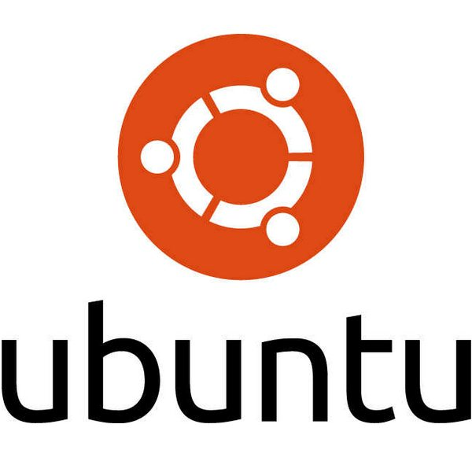
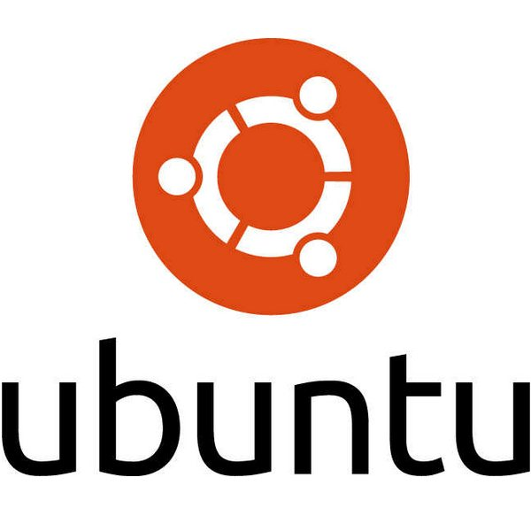

Linux Commands
What is Linux?
Linux is an open source operating system. An operating system is the software that directly manages a system’s hardware and resources, like CPU, memory, and storage. It makes the connections between all of your software and the physical resources that do the work. Linux is simply an operating system’s kernel. The Linux kernel is the core interface between a computer’s hardware and processes; it is used to communicate between the two.
Linux Shell or Terminal is the program that receives commands from the user and directs it to the OS to be processed and display the output. The basic commands below can be used in the Linux Shell.
Basic Linux Commands
pwd: This command is used to determine which directory you are in. It also gives the absolute path that starts from the root. This is denoted by a forward slash /.
ls: This command is used to determine what files are in the directory you are in.
cd: This command is used to go to a specific directory. There are different functions of the cd command: cd / is used to change to the root directory (the first directory in the filesystem); cd ~ is used to change to the home directory; cd .. is used to move to the parent directory of a current directory.
mkdir: This command is used to create a folder or directory. It can also be used to create multiple directories at once.
rmdir: This command is used to delete an empty directory. It will remove every directory specified in the command line.
rm: This command is used to delete files and directories. It will delete the folder and the files it contains. rm –r is used to delete only the directory.
touch: This command is used to create a file.
man: This command stands for manual and is used to learn more about a command and how to use it.
cp: This command is used to copy file through a command line. It is done in two steps because the first tells the location to be copies and the second is where it will be copied.
mv: This command is used to move files through a command line. It can also be used to rename a file.
How to log into your docker container
A container is a runnable instance of an image. You can create, start, stop, move, or delete a container using the Docker API or CLI. You can connect a container to one or more networks, attach storage to it, or even create a new image based on its current state. A container is defined by its image as well as any configuration options you provide to it when you create or start it. When a container is removed, any changes to its state that are not stored in persistent storage disappear.
1. Enter the command [ docker run -it ubuntu /bin/bash ] into Terminal or Windows PowerShell. the command runs the container and attaches to stdin, the standard input, where the /bin/bash process is opened.
2. The command [ ls ] then shows the file system from linux that is inside the container.
3. In a second PowerShell, enter the command [ docker ps ]. This will list the currently running containers. In the image below, you can see the current container (ID: a422d4023e52).
4. Enter the [ exit ] command to leave the shell session.

 
